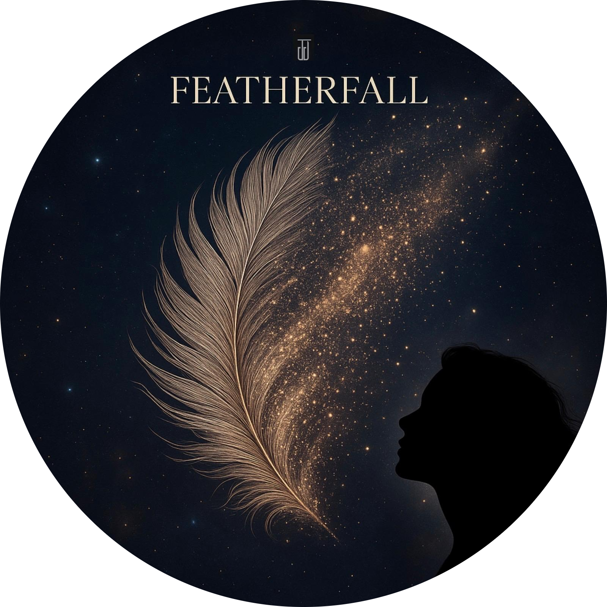
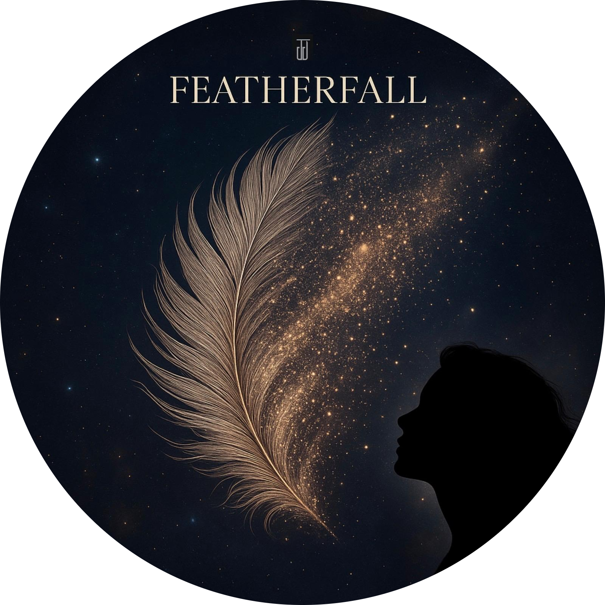
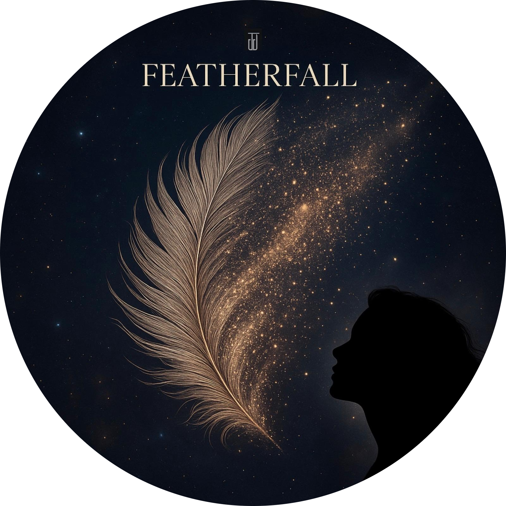
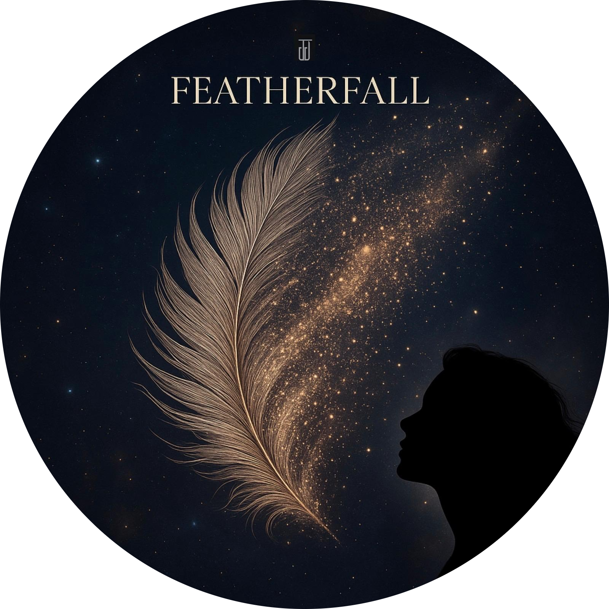

 

Please take a moment to listen to Featherfall...
Featherfall was born during a time I almost walked away from the piano. Years of rigid theory and structure drained the joy from something I once loved deeply. I felt burnt out - creatively and emotionally.
But everything changed after I fractured my femur in early 2022 and found myself bedridden.
In that stillness, I returned to the piano. I let go of the rules and began to play
by ear and feeling, just like I did as a child. That’s when something shifted.
I reconnected with music in its purest form - and Featherfall emerged,
effortlessly and intuitively.

At its core, Featherfall is a reflection of my journey - with music, and with myself. It represents challenging convention, trusting your inner voice, and letting go of the fear that being yourself might not be enough.
It’s about reclaiming who you are - no longer shaped by others’ opinions, but rooted in your own truth.

Featherfall begins with solo piano - delicate and personal - and gradually unfolds into something larger: rising strings and layered choir, growing in intensity and emotion.
By the end, it becomes a powerful crescendo - symbolising release, growth, and rebirth. What begins as a quiet reflection becomes a powerful release - as if something inside finally lets go and becomes free...
The starry night sky reflects the vastness of our inner world - thoughts and emotions. The feather is the self: not falling with heaviness, but with grace. It symbolises the gentle release of past burdens, the long-carried weight finally set free.
As the feather dissolves into stardust, it becomes one with the universe - transformation and the soul’s return to peace; much like the soul reaching a state of nirvana - release from suffering, a union with something eternal.
The silhouette of the woman watches it all unfold - She is the human behind the metaphor - looking up at her own transformation with awe and quiet reflection.

Featherfall is a meditation on healing, letting go, and transcending the weight we carry. I hope that when you listen, you hear your own story in it - and for a moment, feel lighter, freer, and more at peace. 💛